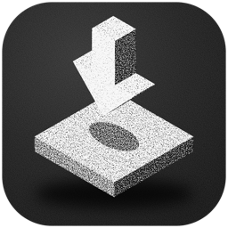

v1.0.7Bandits Clipper
Rangez une page web dans la bonne base Notion, en un raccourci.
Installer dans Zen- Cliquez sur Installer dans Zen.
- Zen demande l'autorisation : Continuer vers l'installation, puis Ajouter.
- Ouvrez l'extension (⌥ ⇧ S) et connectez-vous avec votre compte Google @wearebandits.love.
Outil interne we are bandits. Les mises à jour arrivent toutes seules.
Une question ? pierre@wearebandits.love